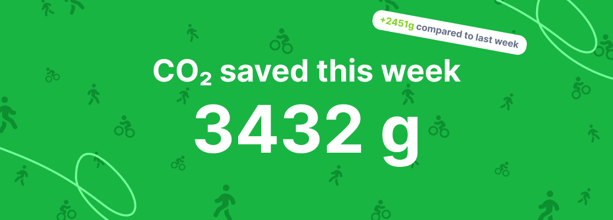
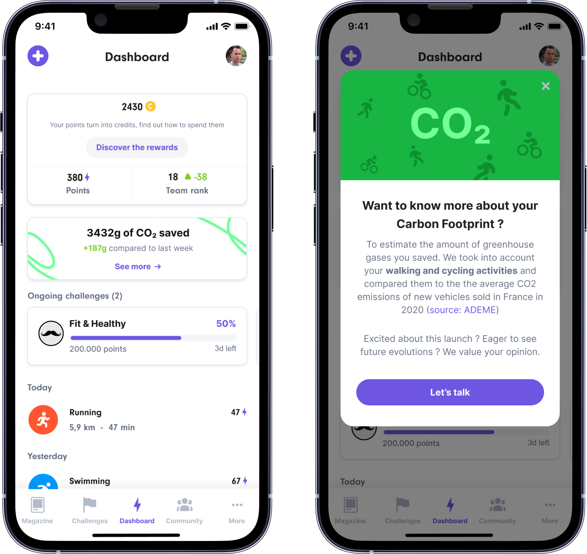
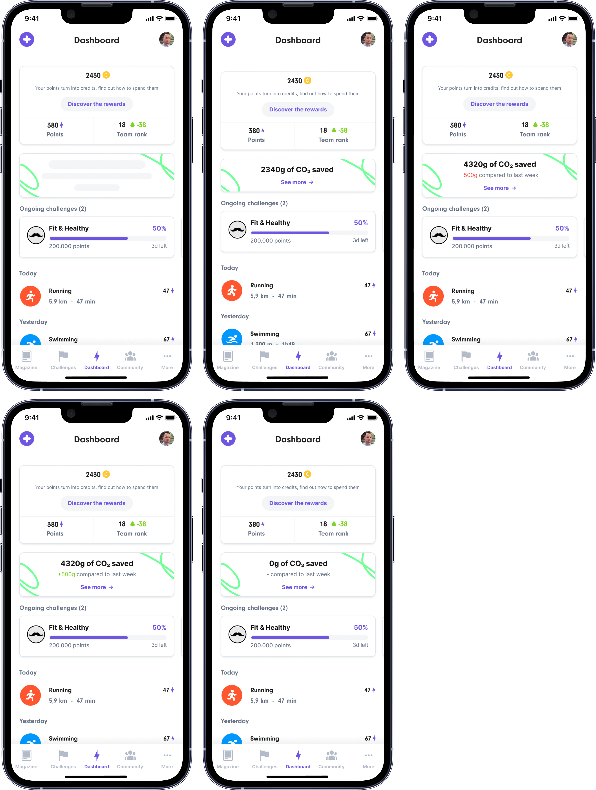

CO2 impact Highlight Dashboard
The UH users have a low 1st week retention rate, the only motivation that they have is to gain some points and go up in the leaderboard. The competition trigger does not seem to work for a good percentage of our UH user base, we need to find other motivators to increase our retention rate.
Our Hypothesis is: The Carbone Impact will be a better motivator for those who are less active and are not triggered by competition.
- Roles: Research, Visual Design, UX, UI
- Tools: Figma
- Year: 2022
- Context: Workplace
What do we want to do?
Add a card with the amount of CO2 saved during the week and the evolution compared to last week
How is it calculated?
KM walking & cycling * 97g (Average emissions of cars sold in 2020, source Ademe)
Every monday at 00:00 am the counter should be back to 0
The evolution should be calculated compared to D-7 (at the same time)
Research and design exploration
The process of developing this new feature was a little bit different from the rest of the features in which I have been involved. In this case, a lot of clients were asking to us the possibility to add a way to measure the CO2 that users were saved by active transport (walking, cycling, etc.). We also had a hypothesis in mind: the development of this new feature will motivates users to come back to track the amount of CO2 they have saved.
Since it was something we could develop quickly and we had some pressure from clients, we decided to start with an “experiment”. We decided not to do any user research, 0 tests were carried out.
However, we did a lot of research in terms of the subject itself and also about others apps that already allow users to track the amount of CO2 they save.
We decided to develop a very simple first version in which users will not be able to check further in terms of details, but where they will be able to let us know about what which type of information they would like to review. We decided to add a call to action that will open a modal that informs the user about this new feature and that includes a link to a form in which they are able to communicate with us.
This call to action will allow us to measure the interest of users about this feature. If users show strong interest in this feature, we will iterate it in order to add new possibilities to it.
Design

States
